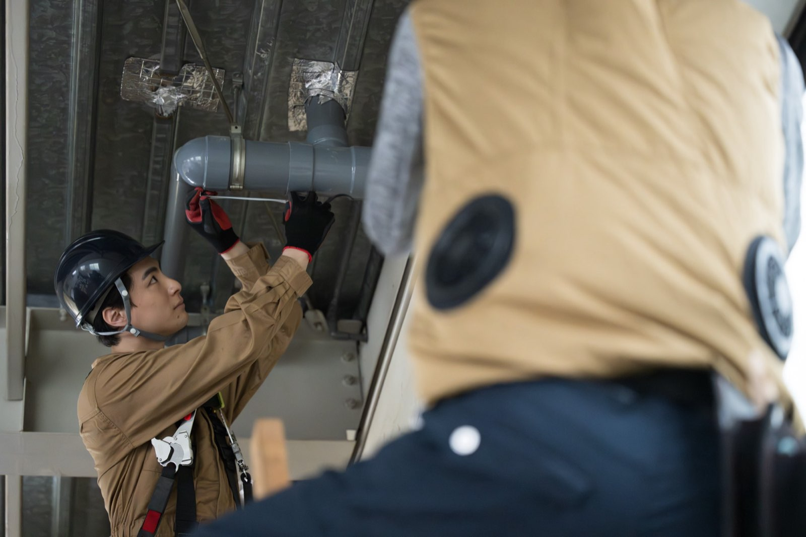
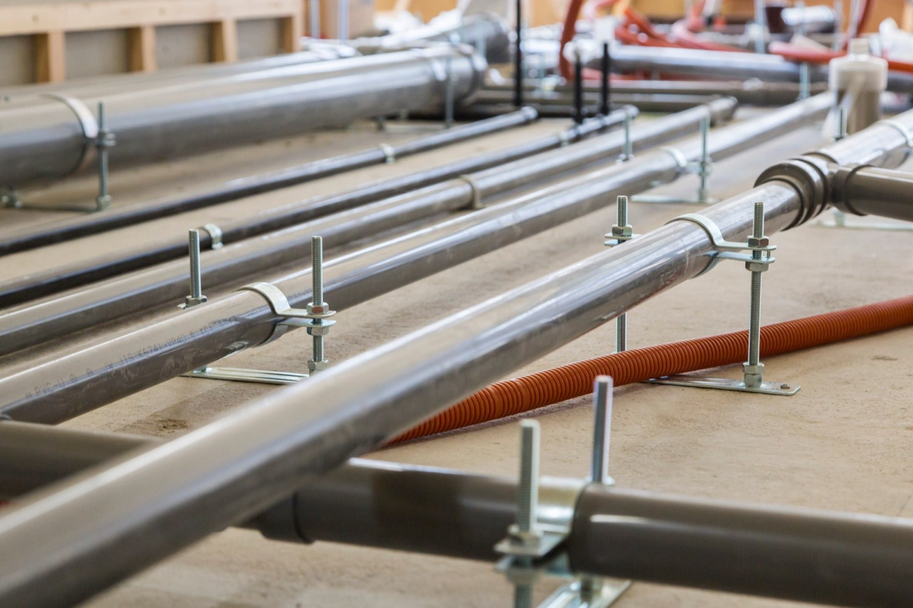
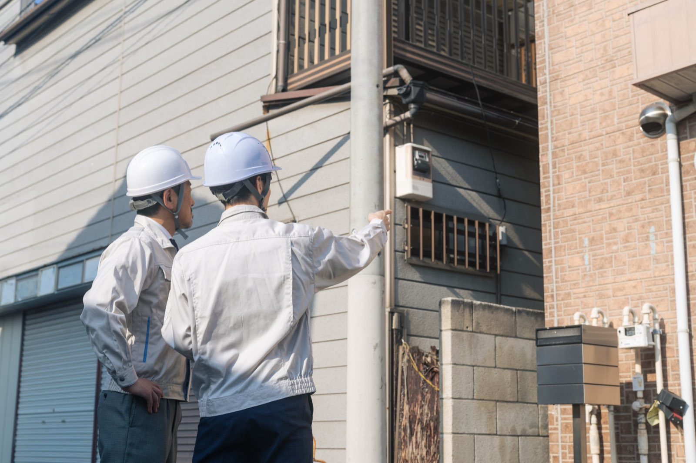
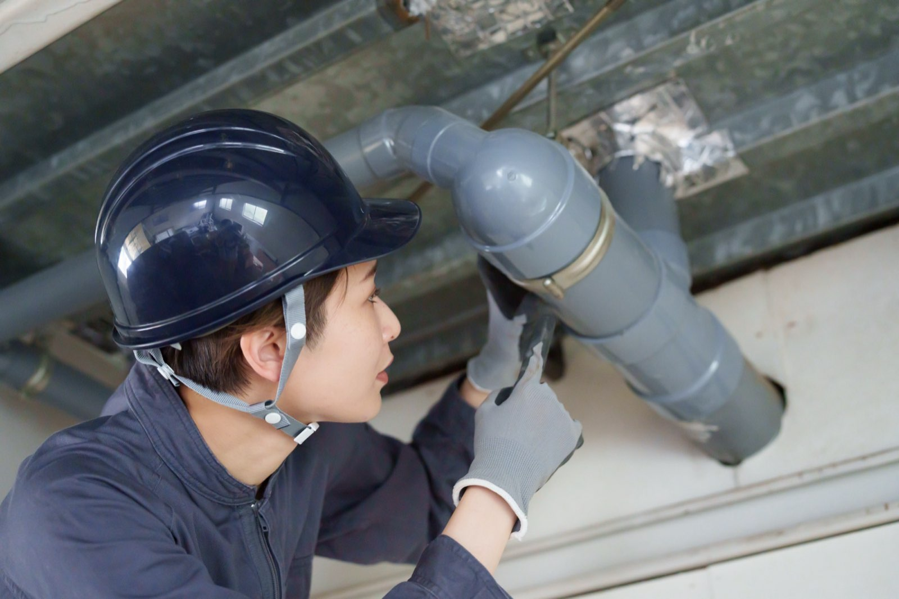

関西圏を拠点に、建築物の配管設備の施工から保守・点検、修理までを一貫して。確かな技術で、誰もが安心・快適に暮らせるまちづくりに貢献します。
生活や社会活動の基盤となる配管インフラ。給排水・消火・空調の各設備を、施工からメンテナンスまで一貫体制で。三交設備は、数十年先を見据えた誠実な仕事を積み重ねています。

給排水・消火・空調。建物の“見えない血管”を、施工から修理まで確かな技術で構築します。

見えない部分にこそ、責任を。徹底した検査と、数十年先を見据えた丁寧な施工。

一生モノの技術を、温かい仲間と。未経験歓迎・完全実力主義のアットホームな職場です。